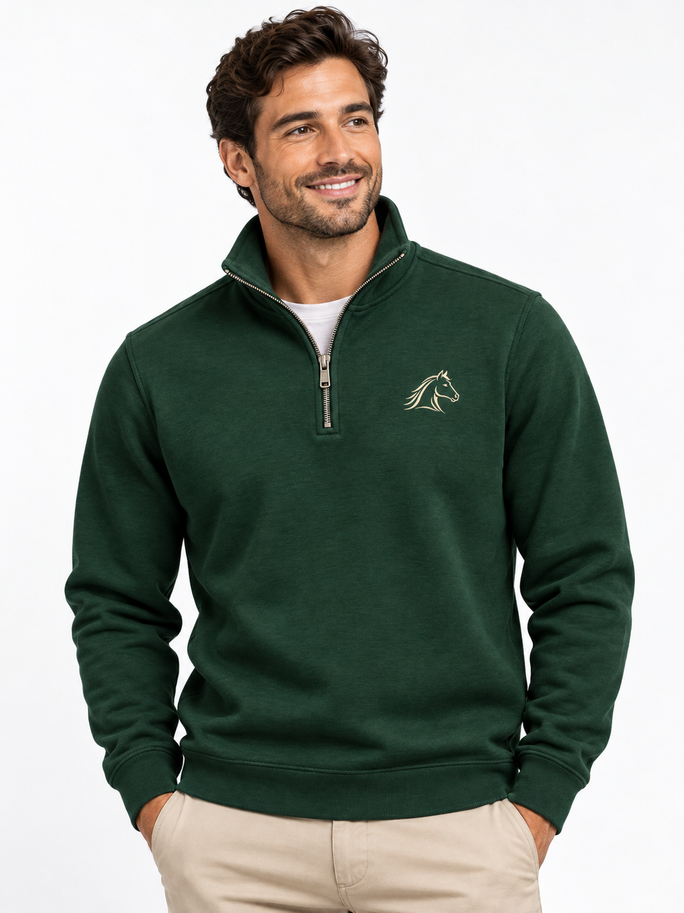
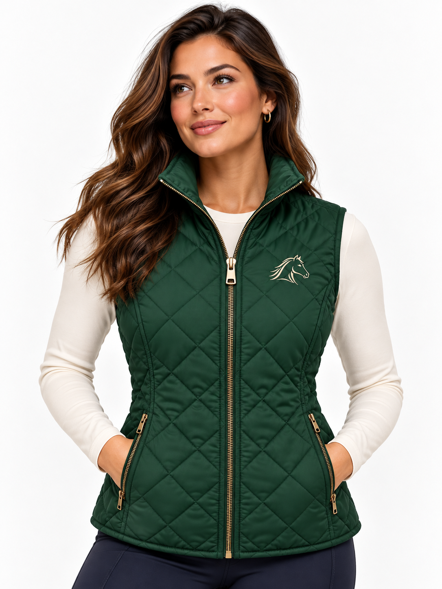

The Faith Reins Collection
Familiar colors. Thoughtful details.
A little purpose in the everyday.
Made to feel like Faith Reins.


This is a reusable composition reference. Both approved photographs retain their original bytes and aspect ratio. Text and layout remain editable.